Kyoto · Kansai · Hokkaido · Japan
京都と、日本各地のおすすめマップ
実際に歩いて「ここはいい！」と感じた場所を中心に選びました。1日ルートのマップは、ホテルを出る時間から帰りの電車まで、実際に回れる時間割つき。混む場所には朝いちばんに行くコースもあります。現金のみ・タトゥー・最終バスなど、行ってから困ることは先に書いてあります。
京都市内
Kyoto番号の順にめぐると、1日で回れます。行きたい場所だけ選ぶこともできます。
-
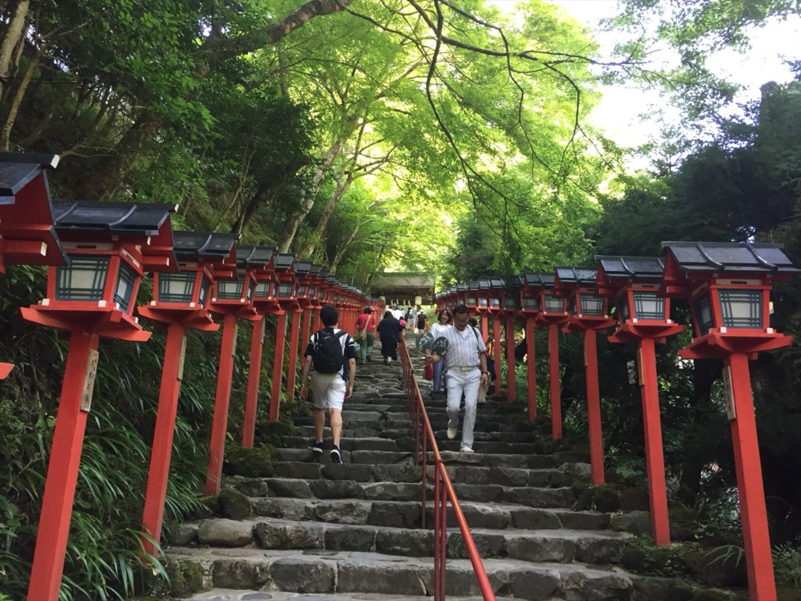
1日ルート叡山電鉄沿線
Along Eizan Railway Line出町柳から一乗寺、貴船、鞍馬へ。夜は先斗町で締めくくる、山と川の京都をめぐるルートです。
-
 1日ルート
1日ルート嵐山・嵯峨野
Arashiyama & Saganoバスで山の上の愛宕念仏寺へ。苔のお寺や竹林の小径を選びながら、坂道を下って渡月橋まで歩くルートです。
-
 1日ルート
1日ルート東山
Higashiyama人の少ない朝6時の清水寺から歩き出して、八坂の塔と産寧坂の石畳、南禅寺、哲学の道を通って銀閣寺へ。早朝に出るコースと、9〜10時に出るコースがあります。
-
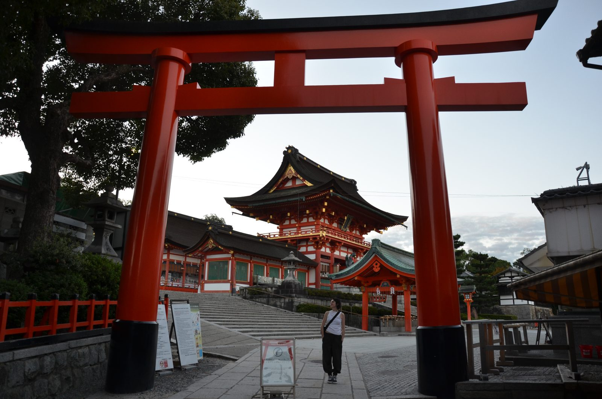
1日ルート伏見稲荷から七条へ
Fushimi Inari to Shichijo朝6時の千本鳥居から、東福寺、泉涌寺、三十三間堂へ。夕方は高瀬川ぞいの銭湯とクラフトビール。早朝に出るコースと、9〜10時に出るコースを選べます。
-
 1日ルート
1日ルート金閣寺〜北野天満宮
Kinkaku-ji to Kitano Tenmangu大徳寺から、池に映る金閣寺、龍安寺の石庭、御室桜の仁和寺へ。嵐電に乗って、夜桜の平野神社と天神さんの北野天満宮まで歩くルートです。
-
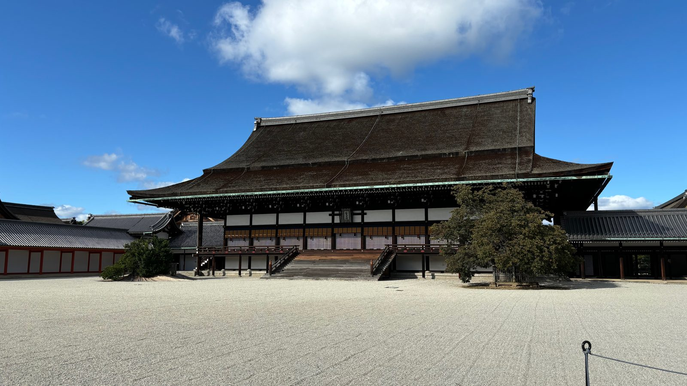
1日ルート二条城と京都御所
Central Kyoto将軍の城・二条城と、天皇の住まいだった京都御所を1日で。夕方は錦市場で食べ歩き、夜は先斗町の灯りの路地へ。二条城の開城8:45に合わせるコースもあります。
-
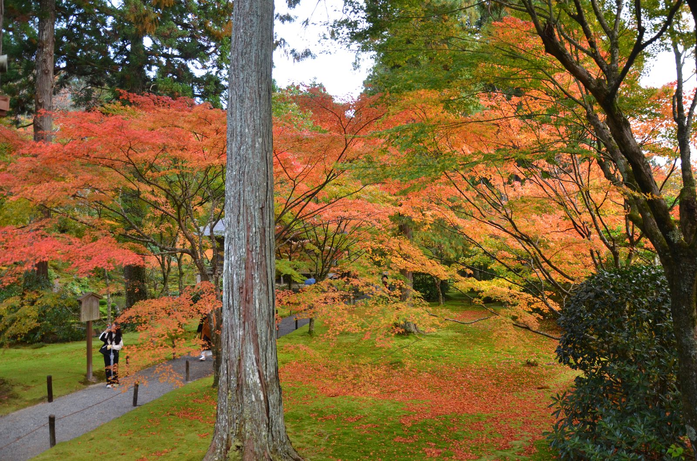
1日ルート大原
Ohara三条からバスで45分の山里へ。苔の庭の三千院、柱のあいだから庭を眺める宝泉院、静かな寂光院。お昼の店と帰りのバスの時刻つき。
-
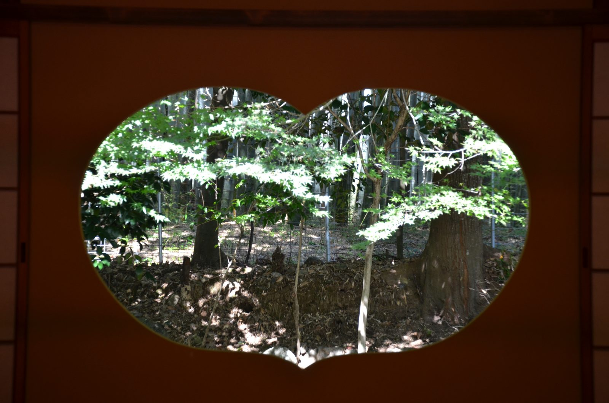
1日ルート西山
Nishiyama竹林に囲まれた地蔵院、鈴虫の音の中でお坊さんの話を聞く鈴虫寺、苔寺の門前でお昼、お酒の神様の松尾大社。午後は電車で1駅の嵐山へ。
-
 1日ルート
1日ルート宇治と伏見
Uji & Fushimi, Kyoto朝いちばんに平等院の鳳凰堂、表参道で抹茶、宇治川を渡って世界遺産の宇治上神社へ。午後は京阪電車で伏見に移り、月桂冠大倉記念館のきき酒と十石舟で酒蔵の町を回ります。
大阪・神戸・奈良
Osaka · Kobe · Nara大阪の梅田〜難波のあたりから出かけるルートが中心です。奈良は京都からも大阪からも行けます。
-
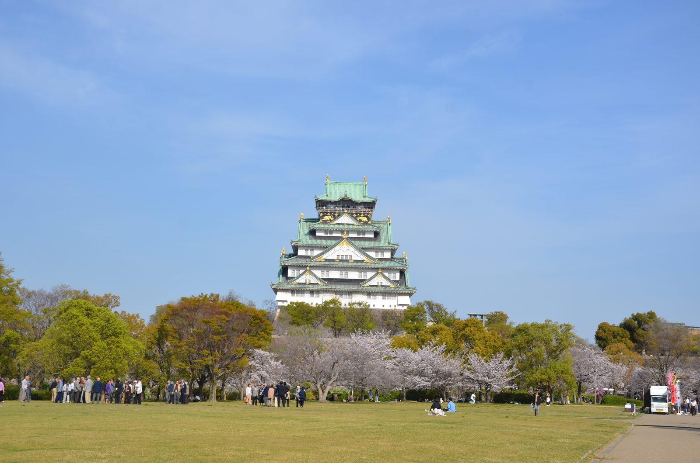
1日ルート大阪（梅田〜難波から1日）
Osaka大阪城、黒門市場の食べ歩き、新世界の串カツ、四天王寺でひと休みして、夜は法善寺横丁と道頓堀のネオンへ。朝早く出て開館の大阪城へ行くコースもあります。
-
 1日ルート
1日ルート箕面
Minohダルマだらけの勝尾寺から森を歩いて箕面大滝へ。締めくくりは大阪名物のたこ焼きと地ビール。
-
 1日ルート
1日ルート神戸（梅田〜難波から1日）
Kobe, Hyogo北野の異人館、三宮のかつ丼でお昼、駅の裏の布引の滝。南京町を抜けて、メリケンパークの夕暮れから夜の港まで。大阪梅田から阪急で27分。
-
 1日ルート
1日ルート姫路・明石・須磨（梅田〜難波から1日）
Himeji, Akashi & Suma, Hyogo白い天守の姫路城、明石の魚の棚で明石焼、須磨浦のロープウェーで海の見える山の上へ、締めは舞子の夕日。姫路城に朝9時の開城で行くか、午後に回すかで2コース。
-
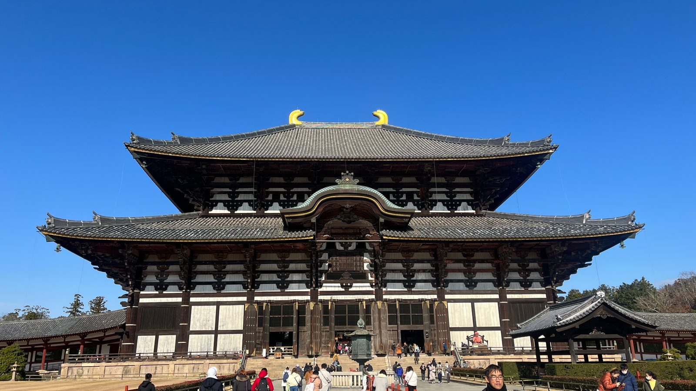
1日ルート奈良（京都・大阪から日帰り）
Nara鹿の歩く奈良公園から、大仏殿、春日大社、夕暮れの二月堂、ならまちの酒蔵できき酒まで。朝8時の開門に大仏殿へ行く早朝コースも。京都からも大阪からも行けます。
この地域の季節限定マップ造幣局の桜
滋賀・琵琶湖
Shiga京都から電車ですぐ。朝に京都を出て、夜に戻ってこられます。
天橋立・城崎（日本海側）
Sea of Japan coast京都から特急で日帰りのルートと、泊まって回るおすすめ。
-
 1日ルート
1日ルート天橋立・伊根（京都から日帰り）
Amanohashidate & Ine, a day trip from Kyoto船で天橋立を渡り、傘松公園から股のぞき、伊根の舟屋は海の上から。京都駅8:38の特急で行き、18:09の特急で帰る時間割。乗り遅れたときの次の便、お昼と晩ごはんの場所つき。
-
 1日ルート
1日ルート城崎温泉・竹田城跡（京都から日帰り）
Kinosaki Onsen & Takeda Castle, Hyogo柳並木の川沿いを歩いて、外湯をはしごする1日。「天空の城」竹田城跡に寄ってから城崎へ行くコースも。京都7:32の特急で、外湯の休みの曜日と最後の特急まで。
-
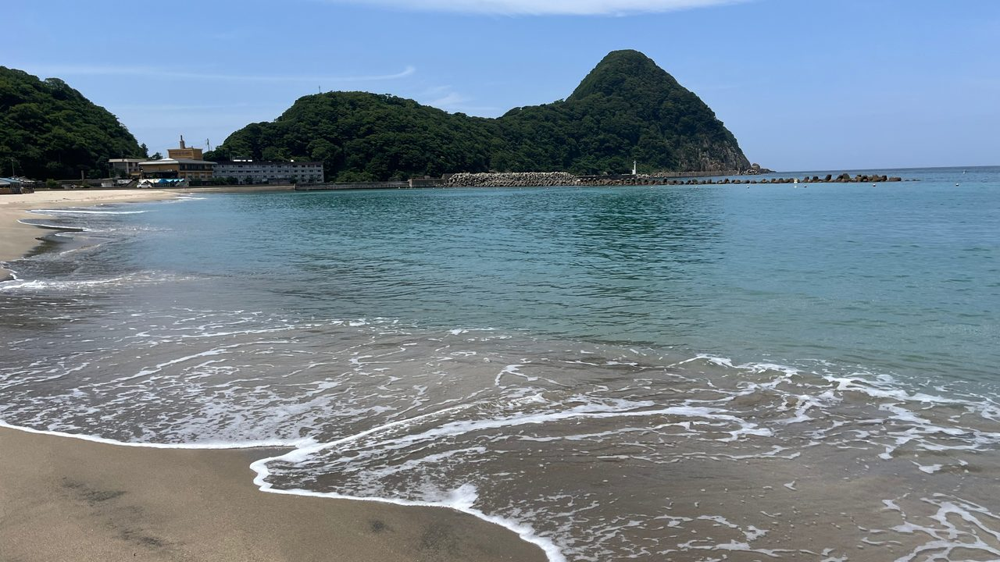
スポット紹介丹後・但馬のおすすめ（泊まって回る）
Tango & Tajima: stay and explore城崎温泉、出石の皿そば、竹野の海、舞鶴の赤れんが、竹田城跡。豊岡のHostel Actに泊まって回る、1泊・2泊・3泊のモデルプランつき。京都から日帰りなら天橋立と伊根へ。
和歌山
Wakayama大阪から日帰りの島めぐりと、泊まって行く南紀。
北海道
Hokkaido札幌・旭川・函館のホテルを朝に出て、夜に戻ってこられるルートです。雪の季節（12〜3月）の注意は、スポットごとに書いてあります。
-
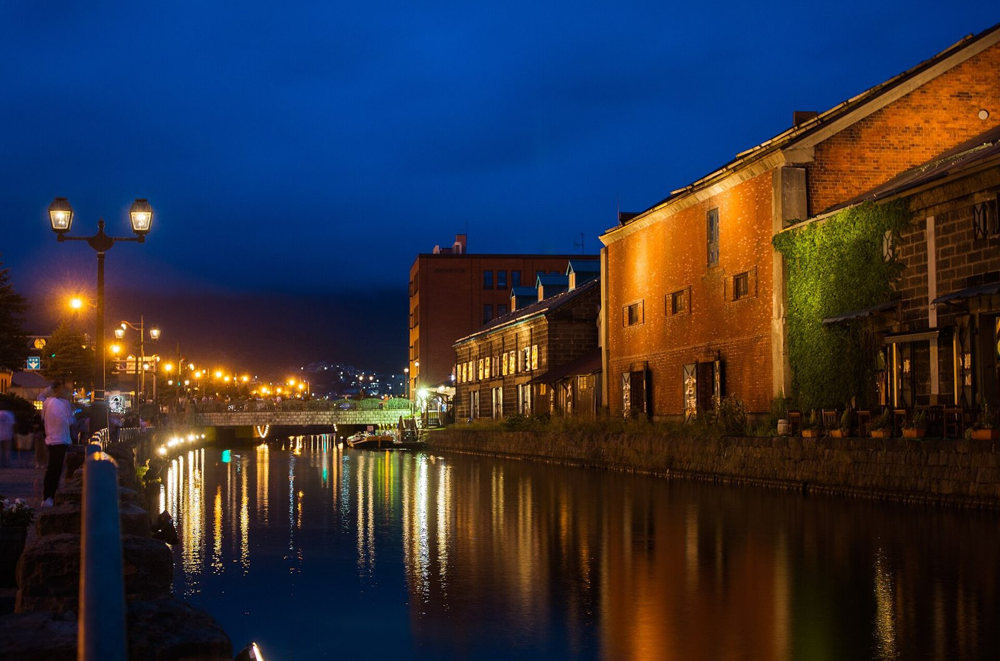
1日ルート小樽（札幌から日帰り）
Otaru Canal, Sakaimachi & Mt. Tengu運河と石造りの倉庫の町・小樽。市場でお昼、旧手宮線と北運河、銀行街と堺町通りを歩いて、夕暮れの運河と天狗山の夜景まで。朝の祝津へ行くコースと、余市のニッカに寄るコースも。
-
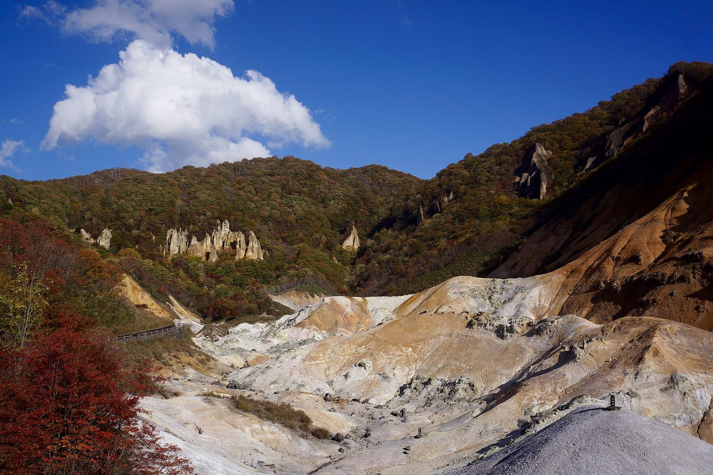
1日ルート札幌から日帰り 温泉めぐり
Jozankei & Noboribetsu湯けむりの上がる登別の地獄谷か、渓谷の温泉街・定山渓へ。足湯、温泉卵、川の天然の足湯、日帰り入浴。登別は特急で1時間14分、定山渓は地下鉄とバスで1時間。お風呂ごとのタトゥーの決まりつき。
-
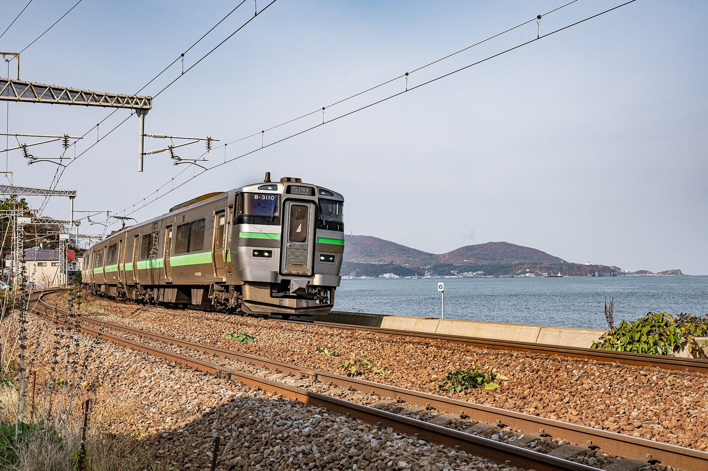
1日ルート銭函と朝里（札幌から日帰り）
Zenibako & Asari小樽の手前、札幌から快速21分の海べりの町・銭函と朝里を回る1日。古い駅舎と丘の神社、海の前のお昼、海すれすれの電車、谷の温泉、夜は小樽の運河沿いでビールと晩ごはん。
-
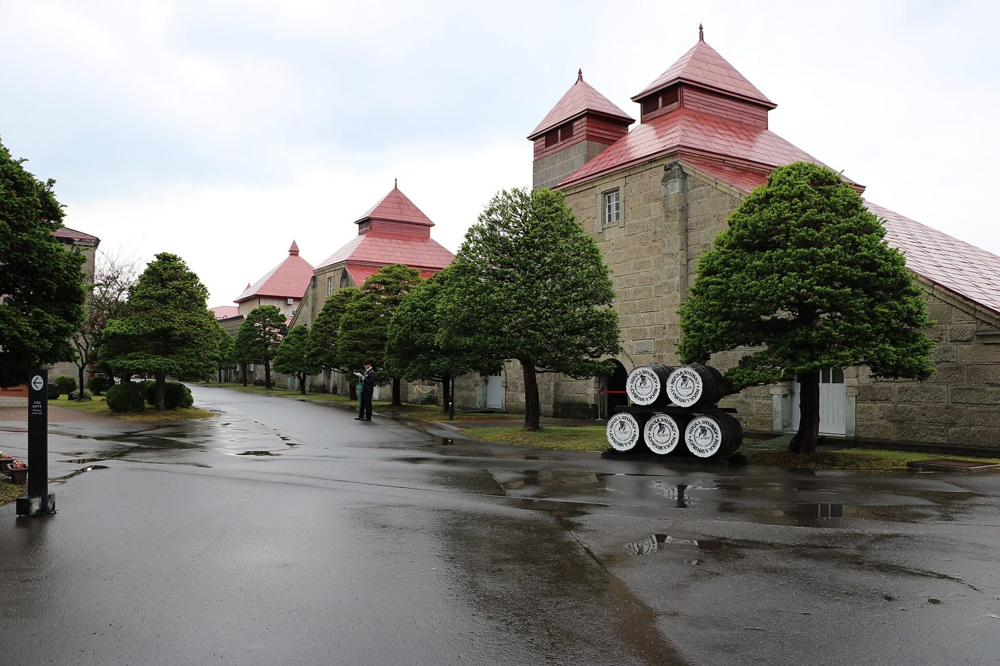
1日ルート余市（札幌から日帰り）
Nikka distillery, wine & the herring shoreニッカの蒸溜所（見学は予約制）、ワイナリー、ニシン漁の時代の浜を回り、温泉と回転ずしで締める余市の1日。札幌8:41の電車で。冬（12月中旬〜4月上旬）はウイスキー・ワイン・温泉のコースに自動で切り替わります。
-
1日ルート 旭山動物園と旭川の町
Asahiyama Zoo & Asahikawa朝のバスで旭山動物園へ。冬は雪の上を歩くペンギン、午後は酒蔵、夜は旭川ラーメンと焼き鳥の小路。冬と雪のない季節で、時間割が自動で切り替わります。
-
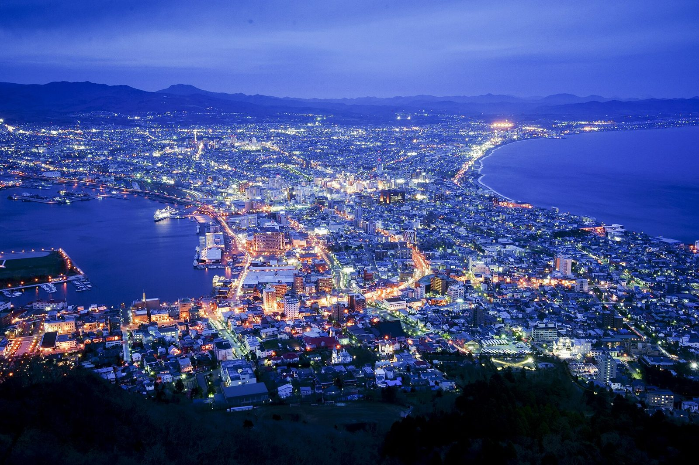
1日ルート函館で1日
Hakodate · market, fort, night view函館駅のまわりのホテルから、朝市の朝ごはん、五稜郭、元町の坂と教会を回り、日の入りに合わせて函館山へ。朝6時台に出るコースと、札幌から特急で行く1泊2日のコースも選べます。
-
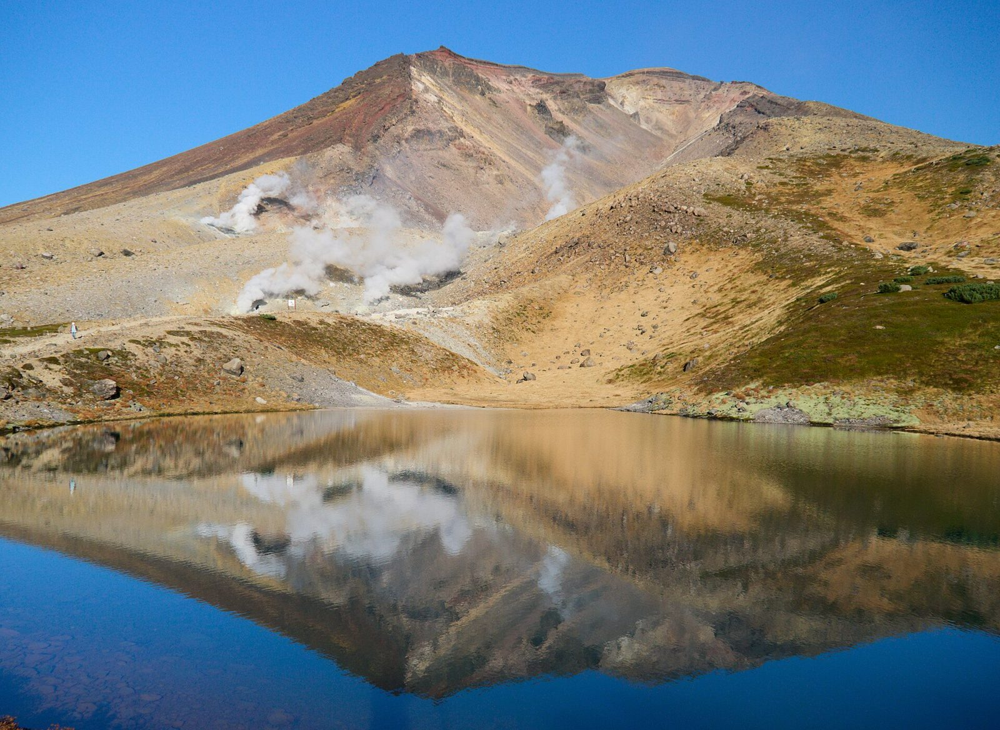
1日ルート大雪山の日帰り：旭岳と層雲峡
Day trips from Asahikawa旭川駅からバスで行く大雪山の1日。旭岳はロープウェイで標高1,600mの姿見の池へ、層雲峡は黒岳の5合目と滝、冬は氷瀑まつり。最終バス・冬の服装・タトゥーの決まりつき。
-
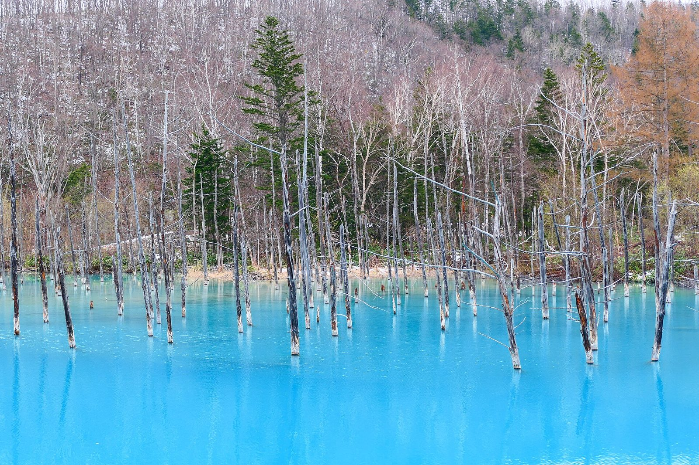
1日ルート美瑛・青い池と富良野（旭川から日帰り）
BIEI · BLUE POND車なしで、JR富良野線と道北バスで回る美瑛の1日。雪のない季節は電動自転車で丘と青い池と白金温泉、冬はクリスマスツリーの木と青い池のライトアップ。夏はファーム富田と四季彩の丘へ。
北陸・長野
Hokuriku · Nagano金沢に2泊して市内をゆっくり歩き、そこから日帰りで北陸を回るおすすめです。

この地域の季節限定マップ白馬（夏）
岡山・広島・島根
Chugoku1泊以上で行きたい場所と、広島へ向かう途中に寄れる岡山・倉敷。
-
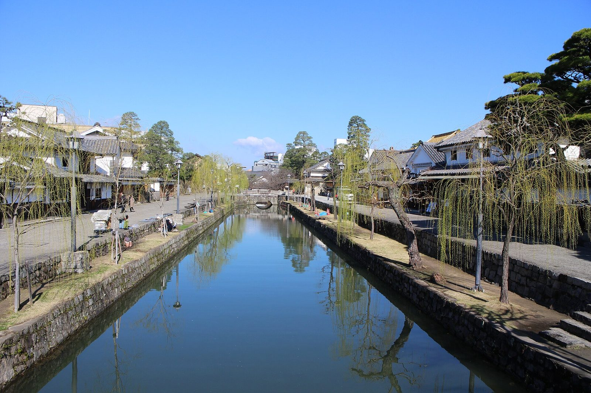
1泊2日・途中下車岡山と倉敷（1泊2日・広島への途中に）
Okayama & Kurashiki昼は岡山城と後楽園、夕方から倉敷に泊まって、明かりのつく川ぞいと朝の静かな町へ。京都・大阪から広島へ行く途中に、4時間40分で岡山城と後楽園に寄るコースも。荷物の預け方ときっぷの買い方つき。
-
 スポット紹介
スポット紹介広島・宮島・尾道のおすすめと日帰り旅
Hiroshima, Miyajima & Onomichi原爆ドームと平和記念公園、路面電車、実際に食べたお好み焼き3軒。日帰りで宮島の大鳥居、坂の町・尾道、酒蔵の西条、呉、岩国の錦帯橋へ。
-
スポット紹介 松江・出雲・足立美術館のおすすめ
Matsue, Izumo & Adachi Museum国宝の松江城とお堀の町、縁結びの出雲大社、庭園日本一の足立美術館。京都から特急やくもで行く、山陰の旅のモデルプランつき。
四国
Shikoku松山・道後に泊まって、高知や高松へも足をのばすおすすめです。
九州
Kyushu福岡に泊まって、屋台の夜と、唐津・太宰府・熊本などへの日帰り。
行く時期が決まっているマップです。見ごろやライトアップの日程は年によって変わるので、お出かけ前に確かめてください。
春・桜のマップ
Spring3月〜4月の桜の時期だけおすすめするマップです。
-
1日ルート春・桜 京都 淀・八幡の桜
Yodo & Yawata cherries, Kyoto3月は淀の河津桜、3月末〜4月上旬は背割堤の桜のトンネル。石清水八幡宮と門前のお昼、夜は伏見か祇園の夜桜まで、時期と出発時間で選べる春の1日です。
見ごろ：淀の河津桜は3月上旬〜中旬、背割堤は3月下旬〜4月上旬
-
 1日ルート春・桜
1日ルート春・桜海津大崎の桜と長浜（京都から日帰り）
Kaizu-Osaki & Nagahama, Shiga京都駅から湖西線で、琵琶湖岸に約4km続く桜並木へ。昼は桜、夕方は長浜の豊公園と晩ごはん。朝7時発なら長浜の町か竹生島、永原まで歩き通すコースも。
見ごろ：例年4月上旬〜中旬
-
 1日ルート春・夜桜
1日ルート春・夜桜三井寺の夜桜（京都から春の夜に）
Miidera, Otsu, Shiga三条から電車で30分。18時に三井寺へ入り、金堂・三重塔・観音堂の夜景、帰りに疏水の夜桜。帰りの電車と、昼から来る人の過ごし方も。
3月下旬〜4月中旬の夜だけ（2026年は3/25〜4/12）
-
1日ルート春・桜 造幣局の桜の通り抜け（大阪）
Osaka Mint cherry walk4月中旬の約1週間だけ開く造幣局の八重桜の道（事前申込制）。申し込んだ時間帯に合わせて、大阪城と玉造口の八重桜、大川沿いの桜並木、夜は天満か道頓堀まで。梅田〜難波から。
4月中旬の約1週間（2026年は4/9〜15。来春は3月発表・要確認）
夏・高原のマップ
Summer山の上のゴンドラが動く、6月〜10月のマップです。
秋・紅葉のマップ
Autumn11月〜12月はじめの紅葉の時期だけおすすめするマップです。
-
1日ルート秋・紅葉 京都 高雄の紅葉
Autumn in Takao, Kyoto三条から地下鉄とJRバスで高雄へ。開門の神護寺から回るコースと、栂ノ尾の高山寺から谷を下る9〜10時発コース。お昼は谷の茶屋で、帰りに仁和寺・北野天満宮へも。
見ごろ：例年11月上旬〜下旬
-
1日ルート秋・紅葉 京都 今宮神社と鷹峯
Imamiya & Takagamine, Kyoto三条から市バスで京都の北へ。今宮神社のあぶり餅、鷹峯の源光庵・常照寺・光悦寺。開門に合わせるコースと9〜10時発の2コース。お昼はしょうざん、夕方は金閣寺へ。
見ごろ：例年11月中旬〜下旬
-
1日ルート秋・紅葉 湖東の紅葉（京都から日帰り）
Taroubou-gu, Eigenji, Hyakusaiji & Kyorinbo, Shiga742段の石段の太郎坊宮と渓谷の永源寺へ、または湖東三山へ。11月29日までは紅葉シャトルバスで三山（西明寺・百済寺・金剛輪寺）、そのあとは乗合タクシーで西明寺と金剛輪寺。教林坊の夜のライトアップは12月6日まで。京都駅からの時刻つきです。
見ごろ：例年11月中旬〜下旬
-
 1日ルート秋・夜の紅葉
1日ルート秋・夜の紅葉京都 醍醐寺の夜の紅葉
Daigoji by night, Kyoto三条から地下鉄で18分。秋の夜だけの伽藍で、照らされた五重塔と、池に映る弁天堂のもみじ。昼から来る人の過ごし方も。2026年は11/20〜12/6。
夜間拝観の期間だけ（2026年は11/20〜12/6）